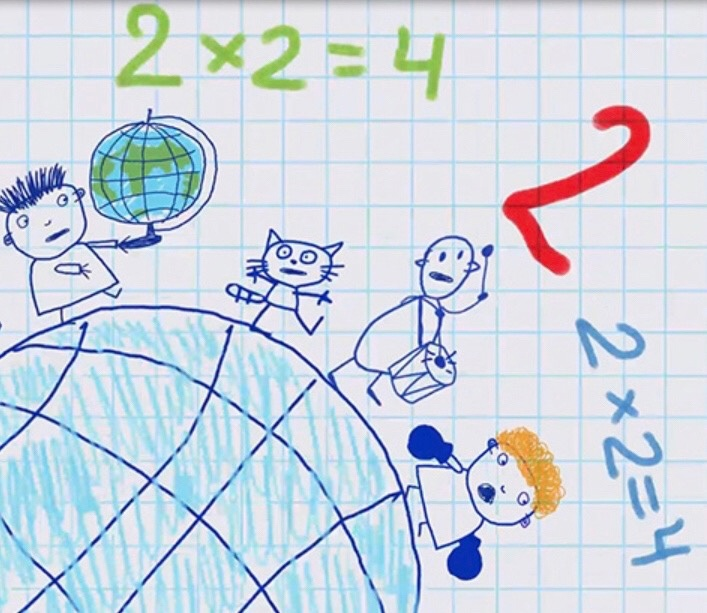

Лайфхак 1: умножение на пальцах
Умножение на 9 очень часто вызывает затруднения, поэтому поможем вам облегчить этот процесс. Понадобятся лишь ладошки! Давайте повернем руки ладошками к себе и дадим каждому пальчику воображаемый номер, по порядку от 1 до 10.
И вот настает время волшебства: умножаем, к примеру, 4 на 9. Загибаем четвертый пальчик по счету слева направо. Сколько пальцев до него – десятки, у нас получается «3», а после него – единицы – «6» в нашем случае. Так мы и получаем 36!
Лайфхак 2: рифма
Знаете песню: «Дважды два – четыре, дважды два – четыре. Это всем известно в целом мире»? Можно сказать, это первое вычисление из таблицы умножения, которые мы запомнили еще до того, как начали изучать ее. Такие стишки, рифмовки и песенки – эффективный способ запомнить таблицу умножения.
Можно не заучивать песни и стихи, достаточно подобрать рифму к числам. Например: «пять на пять – двадцать пять», «шесть на шесть – тридцать шесть», «шесть на восемь – сорок восемь».
Лайфхак 3: карточки Мемо
Напишите на карточках следующее: с одной стороны — пример без ответа, с другой — с ответом. Сначала дайте ребенку время запомнить сторону с ответом, он может проговаривать пример вслух или рисовать его в воздухе. Далее распределите карточки на порции, разложите первые 5–7 на столе и начинайте игру.
Правила простые: ребёнок смотрит на пример и старается вспомнить ответ. Когда ответ дан, время перевернуть карточку и проверить правильность ответа. Если ответ верный, карточку можно убрать в стопку выученных; Если ответ неправильный, карточка отправляется в стопку еще не выученных.